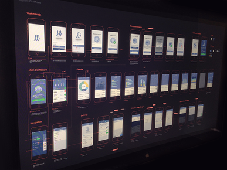
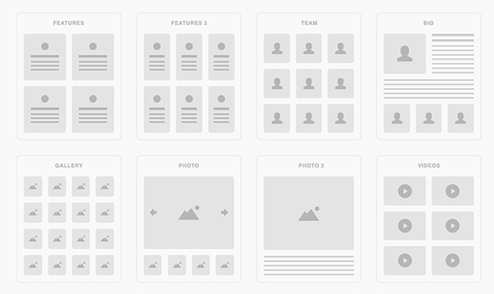
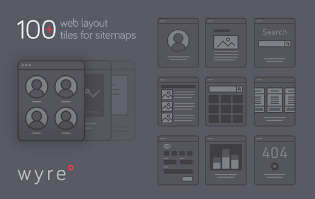

页面跳转流程素材

「流程」相比于原型图是更为抽象的东西。如果说在一个产品中所有的功能都是单独的个性，那么流程就是串联起这些个体的线。在产品设计中接触最多的包括业务流程、功能操作流程和页面跳转流程三类。其中页面流程图是具体到了网站、系统、产品功能设计的时候，表现页面之前的流转关系——用户通过什么操作进了什么页面及后续的操作及页面。使用流程图素材可以节约产品经理很多时间，而且架构清晰，也可以当作是原型图来使用。
关于页面跳转流程

UI Tiles: Website Flowcharts
它除了有流程图设计元素外，还包含72个web原型组件，并能自定义修改。通过这个流程图UI可以让你在几分钟内就能制作一个专业的流程图哦！所有元素均为矢量格式，修改、移动、自定义都很容易。
http://pixelbuddha.net

Wyre: Web Layout Flowcharts
一套暗色风格的网站流程图组件素材，包含了100多款网站布局卡，并提供矢量格式和SVG响应式图标格式。
https://pixelbuddha.net
